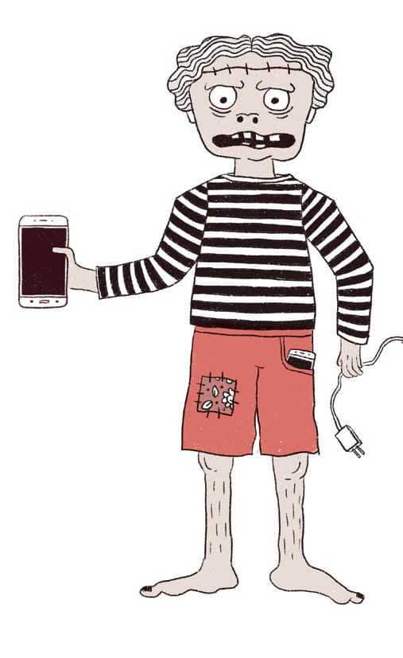

DETECTOR DE PELIGROS
¡CUIDADO!
No te transformes en un zombi digital
Los zombis digitales son los glotones de las tecnologías. ¡El mundo está lleno de misterios!
No permitas el ciberbullying. Así como en la escuela hay compañeras y compañeros que a veces no son amables, también sucede en la Internet.
No te dejes engañar por los algoritmos y la inteligencia artificial: si bien facilitan las búsquedas, también las limitan y pueden manipular los datos que las personas comparten en Internet.